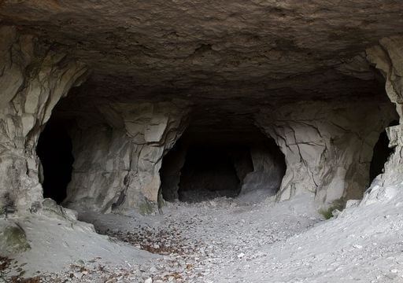
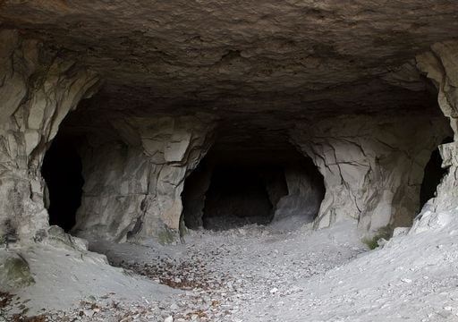

Você está preso em uma caverna e precisa escapar para sobreviver!
Cuidado! Há varias armadilhas pelo caminho, você morreu
voltar no começoParabéns você conseguiu sair da caverna
voltar para cavernaVocê está preso em uma caverna e precisa escapar para sobreviver!
Cuidado! Há varias armadilhas pelo caminho, você morreu
voltar no começoParabéns você conseguiu sair da caverna
voltar para caverna